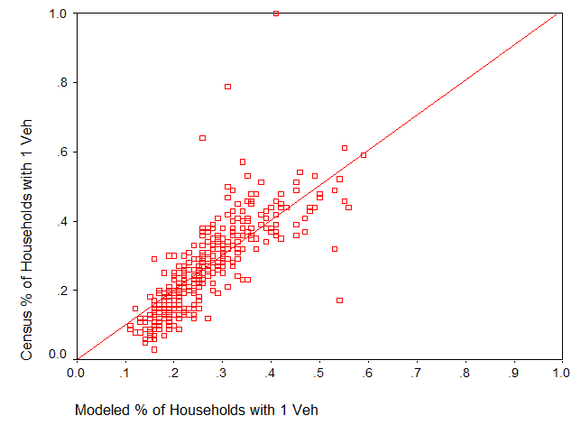

New Auto Ownwership Model
The Version 2.1 auto-ownership model was borrowed from Portland and relied on data that was difficult to project into the future, and much of which could not be validated as having a measurable affect on the number of autos a household might own. Version 3.0 is a best-practice multinomial Logit model developed entirely on local data. The output from the auto ownership model is households by size, income, workers and autos owned, which becomes valuable input into mode choice.
Auto Ownership Utility Equations
(All parameters significant at .05 level, except the parameter for (pop. density for nearest 5 zones) for the 2-vehicle choice, which is significant at .10)
Utility 0veh = -4.2944 + 3.361(Hhsize = 1) + 0.999(Hhsize = 2) + 0.998(Workers = 0) + 2.733(lowest income quartile) + 0.05159(pop. density for nearest 5 zones) + 0.00001990(employment within 30 minutes transit)
Utility 1veh = -3.0894 + 2.971(Hhsize = 1) + 1.008(Hhsize = 2) + 1.947(Workers = 0) + 1.985(Workers = 1) + 1.433(Workers = 2) + 1.557(lowest income quartile) + 0.07346(pop. density for nearest 5 zones) + 0.000008342(employment within 30 minutes transit)
Utility 2veh = -1.0604 + 0.593HH1 + 0.438HH2 - 0.320HH3 - 0.289HH4 + 1.638(Workers = 0) + 1.719(Workers = 1) + 1.708(Workers = 2) + 0.538(lowest income quartile) + 0.02366*(pop. density for nearest 5 zones)
Utility 2veh = 0
The parameters in the model suggest a few behavioral characteristics that seem logical and are worth noting. For example, smaller households are more likely to own fewer vehicles than larger household. Also, households with fewer workers typically own fewer vehicles, perhaps both due to having less need to drive and less means to afford more vehicles. Low-income households are substantially more likely than higher income households to own fewer vehicles. The population density surrounding the residential zone has a significant impact on auto ownership, with higher density locations correlated with lower vehicle ownership. Lastly, access to jobs via transit seems to be an important factor in the auto ownership decision-making process, or is at least the data suggest that households with fewer vehicles live in more transit-accessible neighborhoods.
The calibration of the auto ownership model was done on 2000 Census data, at the census tract level. Scatter plots of this analysis are presented in Figure 1, Figure 2, and Figure 3.

